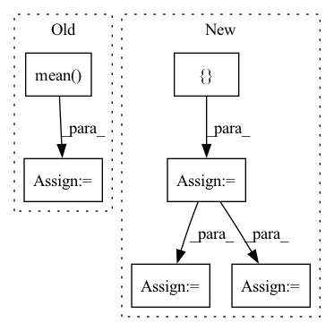

Pattern ID :17675
Before Change
valid_bleu_scores.append(valid_bleu_score)
mean_valid_loss = np.mean(valid_losses)
mean_bleu_score = np.mean( valid_bleu_scores)
return mean_valid_loss, mean_bleu_score
After Change
valid_losses = []
valid_pred_outputs = []
valid_true_outputs = []
for batch in tqdm(self.valid_loader):
src_input, _, tar_output, encoder_mask, _ = batch
src_input, tar_output, encoder_mask = \
src_input.to(device), tar_output.to(device), encoder_mask.to(device)
tar_input = torch.zeros(tar_output.shape[0], tar_output.shape[1]).long()
for seq in tar_input:
seq[0] = sos_id
output = self.model(src_input, tar_input, encoder_mask) // (B, L, vocab_size)
loss = self.criterion(output.view(-1, sp_vocab_size), tar_output.view(batch_size * seq_len))
valid_losses.append(loss.item())
output_list = torch.argmax(output, dim=-1).tolist()
tar_output_list = tar_output.tolist()
trimmed_output_list, trimmed_tar_output_list = self.trim_output(output_list, tar_output_list)
valid_pred_outputs += trimmed_output_list
valid_true_outputs += trimmed_tar_output_list
mean_valid_loss = np.mean(valid_losses)
valid_accuracy = metrics.accuracy_score(valid_true_outputs, valid_pred_outputs)
return mean_valid_loss, valid_accuracy
In pattern: SUPERPATTERN
Frequency: 3
Non-data size: 6
Instances Fragment ID: 58328426
Project Name: devjwsong/transformer-translator-pytorch
Commit Name: fe38eabe05fbd7e2b1b7a1077aee5f1563dba374
Time: 2020-04-27
Author: enflwodn@gmail.com
File Name: src/main.py
M Class Name: Manager
N Class Name: Manager
M Method Name: validation(1)
N Method Name: validation(1)
M Parent Class:
N Parent Class:
M File Name: src/main.py
N File Name: src/main.py
M Start Line: 118
M End Line: 141
N Start Line: 120
N End Line: 148
Before Change
input_data = np.concatenate([input_data.T.reshape((-1,input_data.shape[-1])), sin_lat_lons, cos_lat_lons, solar_times, landsea], axis=-1)
// Not want to predict non-physics variables -> Output only the data variables? Would be simpler, and just add in the new ones each time
mean = np.mean( input_data, axis=(0, 1))
std = np.std(input_data, axis=(0, 1))
output_data = np.stack(
[
end[f"{var}"].valuesAfter Change
// End time solar radiation too
end_date = end.time.dt.values
end_solar_times = [ np.array([extraterrestrial_irrad(date, lat, lon) for lat, lon in lat_lons]) -= const.SOLAR_MEAN
end_solar_times /= const.SOLAR_STD
// Stack the data into a large data cube
input_data = np.stack( Fragment ID: 58328408
Project Name: openclimatefix/graph_weather
Commit Name: a7fa45d6265ff505e6faf8b1bfadfc04c7ce5f42
Time: 2022-03-23
Author: jacob@bieker.tech
File Name: graph_weather/data/dataloader.py
M Class Name: AnalysisDataset
N Class Name: AnalysisDataset
M Method Name: __getitem__(2)
N Method Name: __getitem__(2)
M Parent Class: Dataset
N Parent Class: Dataset
M File Name: graph_weather/data/dataloader.py
N File Name: graph_weather/data/dataloader.py
M Start Line: 59
M End Line: 106
N Start Line: 60
N End Line: 118
Before Change
test_bleu_score = metrics.bleu_score(decoded_output_list, decoded_tar_output_list, max_n=4)
test_bleu_scores.append(test_bleu_score)
mean_bleu_score = np.mean( test_bleu_scores)
print(f"Testing finished! Test BLEU score: {mean_bleu_score}")
After Change
self.model.eval()
test_pred_outputs = []
test_true_outputs = []
for batch in tqdm(self.test_loader):
src_input, _, tar_output, encoder_mask, _ = batch
src_input, tar_output, encoder_mask = \
src_input.to(device), tar_output.to(device), encoder_mask.to(device)
tar_input = torch.zeros(tar_output.shape[0], tar_output.shape[1]).long()
for seq in tar_input:
seq[0] = sos_id
output = self.model(src_input, tar_input, encoder_mask) // (B, L, vocab_size)
output = torch.argmax(output, dim=-1) // (B, L)
output_list = output.tolist()
tar_output_list = tar_output.tolist()
trimmed_output_list, trimmed_tar_output_list = self.trim_output(output_list, tar_output_list)
test_pred_outputs += trimmed_output_list
test_true_outputs += trimmed_tar_output_list
test_accuracy = metrics.accuracy_score(test_true_outputs, test_pred_outputs)
print(f"Testing finished! Test accuracy: {test_accuracy}")
Fragment ID: 58328409
Project Name: devjwsong/transformer-translator-pytorch
Commit Name: fe38eabe05fbd7e2b1b7a1077aee5f1563dba374
Time: 2020-04-27
Author: enflwodn@gmail.com
File Name: src/main.py
M Class Name: Manager
N Class Name: Manager
M Method Name: test(2)
N Method Name: test(2)
M Parent Class:
N Parent Class:
M File Name: src/main.py
N File Name: src/main.py
M Start Line: 153
M End Line: 177
N Start Line: 160
N End Line: 184